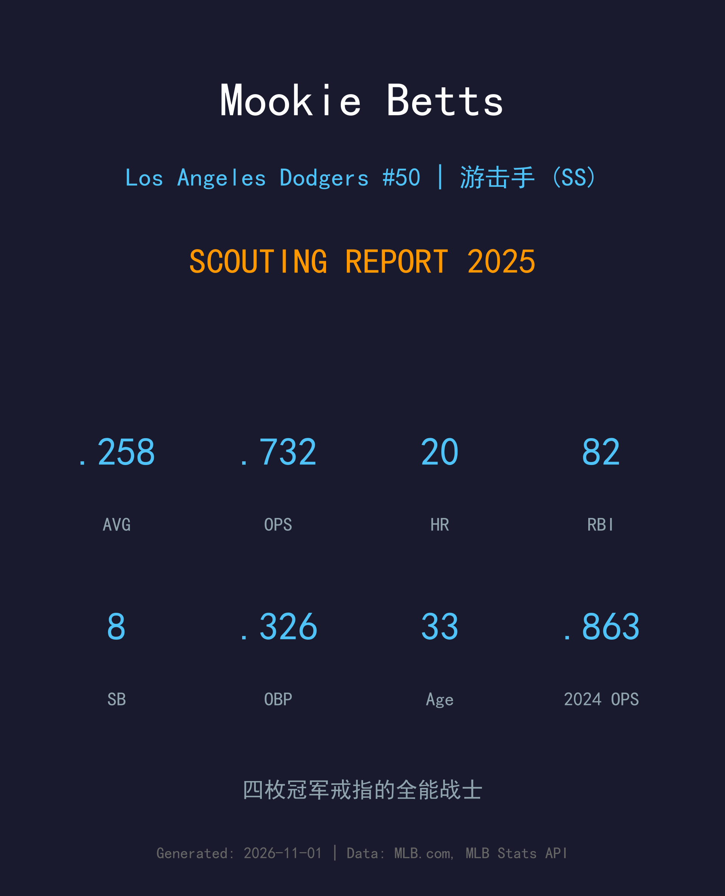
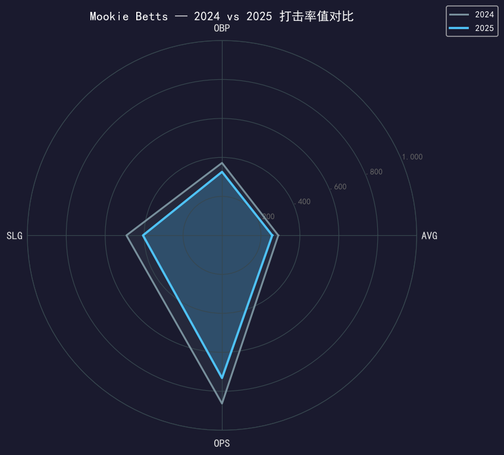
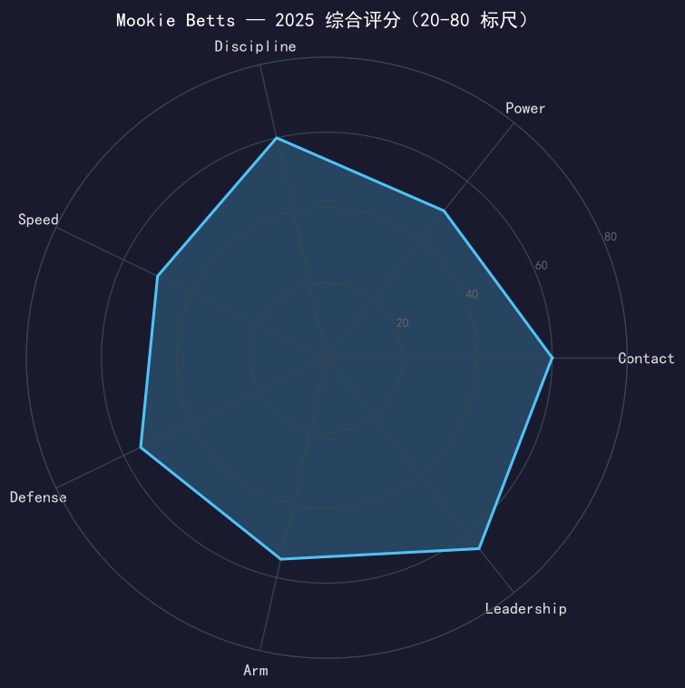

Los Angeles Dodgers #50 | 游击手 | 右打 | 四冠全能战士

Mookie Betts 是当今大联盟最全面的球员之一，2018年美联MVP得主，以精英级打击、顶级守备与超高棒球智商著称。
2025年他出赛150场，缴出.258/.326/.406、OPS .732，20轰82打点。各项率值较2024年的.289/.372/.491明显回落，但健康出赛150场（2024年仅116场）让他打出生涯新高的82分打点，并随队完成世界大赛二连霸。
33岁的 Betts 正从巅峰期过渡到老将核心期：速度工具持续退化（盗垒从16次降至8次），但 contact 能力依旧联盟顶级（68次三振，三振率仅10.3%）。他是道奇内野的定海神针，也是年轻球员的职业标杆。
.346/.438/.640、32轰30盗的史诗赛季，MVP票选压倒性胜出，同年夺世界大赛冠军。
季中被交易至洛杉矶道奇，当季即随队夺得世界大赛冠军，开启道奇王朝时代。
生涯最佳攻击赛季之一，39轰创下当时个人纪录，确立道奇头牌地位。
作为游击手核心连续两年夺冠；2025年季后赛出赛17场，随队七战击败多伦多蓝鸟，完成卫冕。

| 赛季 | G | AVG | OBP | SLG | OPS | HR | RBI | BB | SO |
|---|---|---|---|---|---|---|---|---|---|
| 2024 | 116 | .289 | .372 | .491 | .863 | 19 | 75 | 61 | 57 |
| 2025 | 150 | .258 | .326 | .406 | .732 | 20 | 82 | 61 | 68 |
四项率值全面回落：AVG -31 点、SLG -85 点、OPS -131 点，但出赛数从 116 场回升到 150 场，打点创生涯新高。这是「健康但效率下滑」的一季——量大质减，与 2024 年「量少质精」恰好镜像。
Betts 的挥棒依旧紧凑、出手快，但 2025 年击球初速与仰角数据较 2024 年缩水：长打率从 .491 跌至 .406，ISO 从 .202 跌到 .148。20 轰与上季持平，说明力量底子还在，但二垒打从 24 支降到 23 支、整体长打分布变平。他的 .406 SLG 是自 2017 年以来首次低于 .450，值得球团关注是否进入自然衰退期。
68 次三振对 61 次保送，三振率 10.3% 仍是道奇主力阵容最低档；OBP-AVG 差距 .068，上垒贡献稳定。隐忧是 15 次双杀打偏高，与滚地球比例上升、跑速下滑直接相关——打序中段的他每支双杀都在消耗队友的上垒成果。
转任游击手第三年，守备稳定性已是联盟中游以上：步法干净、传球准确，棒球智商弥补了一部分横向范围流失。深游击方向的球处理能力较 2024 年进步，但 33 岁的第一步速度决定了这个位置不会是他终老的守位。
150 场出赛是 2022 年以来最多，球队显然把「让他健康打完」列为优先事项，而他也用 82 分打点（全队前列）回馈了信任。常规赛率值下滑是不争的事实，但季后赛 17 场缴出 8 分打点、包括世界大赛多场关键推进——冠军队需要的不是每棒都轰，而是每棒都到位。Betts 的价值从来不止 OPS 一行。

健康满勤的老将核心，contact 与领导力仍属联盟顶级
B+ 级 / 明星级内野手
道奇 2025 季后赛之路：外卡轮 2-0 红人 → NLDS 3-1 费城人 → NLCS 4-0 酿酒人 → 世界大赛 4-3 多伦多蓝鸟（二连霸）。
| G | PA | AVG | OBP | SLG | OPS | HR | RBI | BB | SO |
|---|---|---|---|---|---|---|---|---|---|
| 17 | 81 | .229 | .325 | .314 | .639 | 0 | 8 | 10 | 9 |
Mookie Betts 将在 2026 赛季年满 34 岁。他的合同与球队地位决定了他仍是道奇内野的核心，但「效率下滑 vs 健康满勤」的拉锯会是未来两季的主线。球队需要在保持他身体状态的同时，想办法找回部分长打产出——哪怕是回到 .750 OPS 级别，搭配他的守备与领导力，依然是冠军队二当家级别的贡献。
2026 目标：OPS 回到 .750+，双杀打控制在 10 次以内
中期：游击守位负荷管理，视情况回补外野以延长生涯
长期：向 player-coach 型角色自然过渡，传承冠军文化
Mookie Betts 出生于田纳西州纳什维尔，高中时期就是篮球与棒球双栖明星。2011 年，他在选秀第五轮被波士顿红袜选中，2014 年登上大联盟，并迅速成长为联盟最全能的球员。
在波士顿，他赢下了 2018 年美联 MVP 与世界大赛冠军。2020 年，他被交易至洛杉矶道奇，当赛季就帮助球队夺得世界大赛冠军，并在 2024、2025 年随队完成世界大赛二连霸——四枚冠军戒指在手，现役球员中屈指可数。
2024 年起，Betts 正式从外野转任游击手——这一在 32 岁高龄仍愿意接受新挑战的决定，展现了他对比赛的热爱与 versatility。他同时以职业态度著称，是联盟中最受尊敬的球员之一。场外的 Betts 热爱保龄球，曾多次参加职业保龄球赛事。